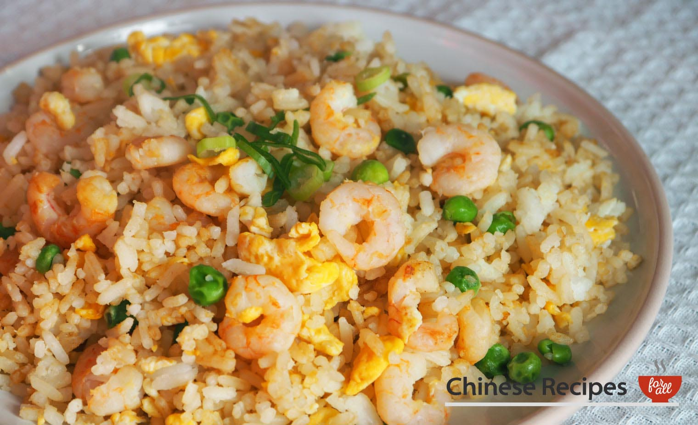

Shrimp Fried Rice

Description
Shrimps and fried rice garnished with slices of spring onion!
Ingredients
- 1 tablespoon vegetable oil
- 1 egg, beaten
- 30g frozen peas
- 150g shrimps
- 250g long grain rice, cooked and cooled
- A pinch of salt
- 1 teaspoon soy sauce
- spring onions, sliced
Steps
- Prepare rice. The rice is best cooked when it's cooled.
- Take the shrimps and squeeze them gently, squeeze any excess water.
- Heat 1 tablespoon oil in a wok, on high heat until hot.
- Pour beaten eggs into wok, stir constantly. When the egg has cooked a little into a scramble, add peas and shrimps and stir for a minute.
- Next, add in the boiled rice into the wok and fry for three minutes.
- Add salt and soy sauce to taste and fry for another three minutes.
- Garnish with spring onion slices.
Go back to Odin Recipes!